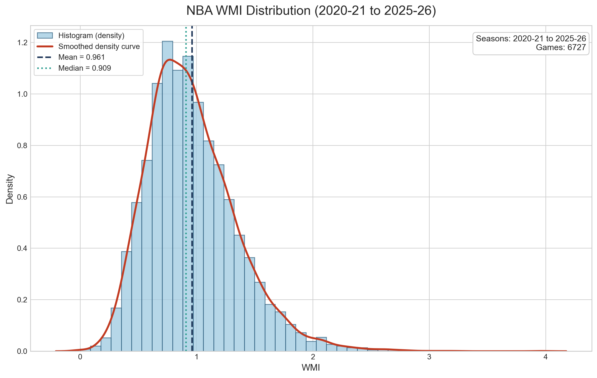

How to read a game
- WMI > 1
- More whistle momentum after recent defensive fouls.
- WMI ~= 1
- Little or no difference in the short-term pattern.
- WMI < 1
- Less whistle momentum after recent defensive fouls.
NBA analytics research
A game-by-game metric for whether recent defensive foul calls are followed by short-term changes in foul-call momentum.

Current release
The comparison set is built from completed games. Percentiles tell where a single game lands relative to the rest of the dataset.
OKC vs. MIL on February 12, 2026 has WMI = 0.9523809524. The score is close to 1, which points to little difference in this game.
Open the game breakdownWMI Search
Search the static WMI dataset by team, date, matchup, or game ID. Results include regular season, playoffs, and play-in games from 2019-20 through the available 2025-26 snapshot where possession-level data is available.
Selected game
The lookup is instant because the WMI values are precomputed into a static CSV.
Method
WMI uses possession windows. It does not adjust for score, teams, period, or late-game strategy in v1.
WMI is a pattern metric. It can flag games worth reviewing, but it is not proof of referee intent, bias, or misconduct.
Artifacts
Download the release files or inspect the scripts that generate them.